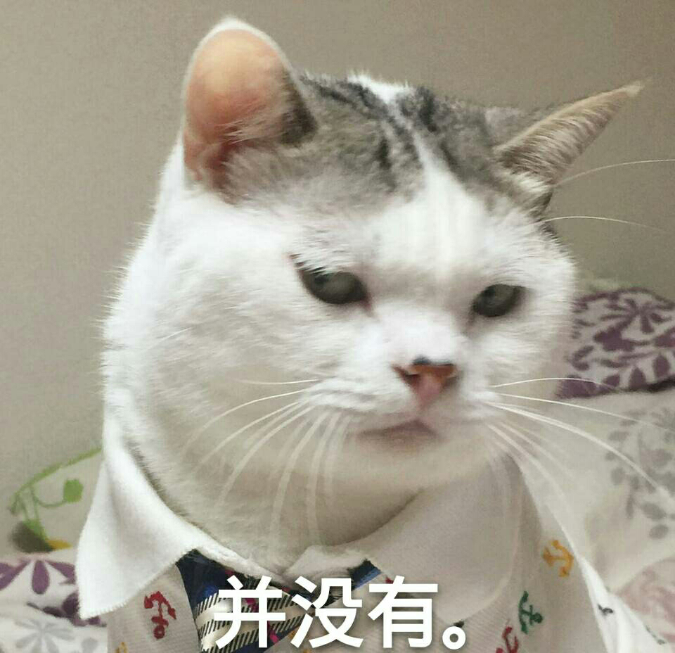

正文: 说到这我就想哭。。
去年学科目二的时候教练总夸我练得好，一块的学员也说我肯定可以顺利过关，谦虚如我：哪里哪里，说不定考试我会在最简单的地方挂掉。。
考试那天，第一次：安全带没系，扣一百分~
第二次，倒库侧方S弯完美通过，直角转弯。。。压线了。。。
啊都怪我这张贱嘴啊
——————————————————————————————————————
第一次更新：
最近打算重考。。
上帝老天爷玉皇大帝孙悟空保佑我一定能过~
一定能过~~
一定能过~~~
然而。。。

-------------------------------
第二次更新：
前不久有人给我介绍了一个地方据说可以不用考试“包过”！！！
我们一群人兴冲冲的赶了一千公里路去了。。。
到地方发现其实是是骗人的。。
我觉得此生可能都没有机会开车了